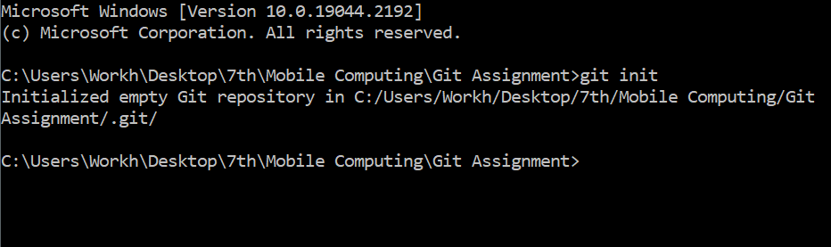

=> GitHub is a web-based Git repository hosting service, which offers all of the distributed revision control and source code management (SCM) functionality of Git as well as adding its own features.
=> Download and install the latest version of GitHub Desktop. This will automatically install Git and keep it upto-date for you. https://help.github.com/articles/set-up-git/
~ when you run this command in your project directory, or when you cloned an existing project, you created a repository The repository is a subdirectory named .git containing various files The dot indicates a “hidden” directory You do not work directly with the contents of that directory; various git commands do that for you
